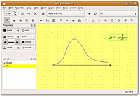

Ipe
Dieser Artikel wurde für die folgenden Ubuntu-Versionen getestet:
Ubuntu 14.04 Trusty Tahr
Zum Verständnis dieses Artikels sind folgende Seiten hilfreich:
Der Ipe extensible drawing editor  ist ein freies Programm für Windows, Linux und Mac OS X zur einfachen Erstellung von Vektorgrafiken im PDF- und EPS-Format, das seit 1993 von Otfried Cheong entwickelt wird. Zur Darstellung von Text greift Ipe auf LaTeX zurück. Dadurch ist auch das Einbinden von komplexen Formeln oder exotischen Symbolen kein Problem. Ipe unterstützt die Verwendung von Ebenen und bietet die Möglichkeit, Dokumente mit mehreren Seiten zu erstellen.
ist ein freies Programm für Windows, Linux und Mac OS X zur einfachen Erstellung von Vektorgrafiken im PDF- und EPS-Format, das seit 1993 von Otfried Cheong entwickelt wird. Zur Darstellung von Text greift Ipe auf LaTeX zurück. Dadurch ist auch das Einbinden von komplexen Formeln oder exotischen Symbolen kein Problem. Ipe unterstützt die Verwendung von Ebenen und bietet die Möglichkeit, Dokumente mit mehreren Seiten zu erstellen.
Installation¶
Ipe ist in den Ubuntu-Quellen verfügbar und kann bequem installiert [1] werden.
ipe (universe)
pdftoipe (universe, optional, für PDF-Import)
figtoipe (universe, optional, für Import von Xfig-Dokumenten)
 mit apturl
mit apturl
Paketliste zum Kopieren:
sudo apt-get install ipe pdftoipe figtoipe
sudo aptitude install ipe pdftoipe figtoipe
Bedienung¶
Programmstart¶
Das Programm kann nach der Installation durch die Eingabe von ipe gestartet werden [2].
Dateiformate¶
Ipe speichert Dateien in einem eigenen XML-Format mit der Endung *.ipe. Zur Weiterverwendung in anderen Programmen bzw. zum Einbinden in LaTeX-Dokumente kann zwischen den Formaten PDF und EPS gewählt werden. Darüber hinaus können Grafiken mittels "File -> save as bitmap" als PNG exportiert werden.
Die von Ipe erstellten PDF- und EPS-Dokumente enthalten zusätzliche Markup-Informationen, die es ermöglichen, sie später erneut in Ipe zu öffnen und zu bearbeiten. Von anderen Programmen erstellte Dokumente in diesen Formaten lassen sich jedoch nicht ohne weiteres mit Ipe bearbeiten. Grafiken im PDF-Format können aber mit dem Kommandozeilenprogramm pdftoipe in das von Ipe verwendete XML-Format umgewandelt werden.
Mit figtoipe ist es außerdem möglich, in Xfig erstellte Grafiken für die Bearbeitung mit Ipe zu konvertieren. Einige Funktionen von Xfig werden dabei allerdings noch nicht unterstützt.
Mittels "File -> Insert image" können auch Pixelgrafiken in den Formaten JPG, PNG und BMP importiert werden.
Zeichnen¶
 Die grafische Oberfläche ist einfach und übersichtlich gehalten, die meisten Funktionen sind daher selbsterklärend. In der Statusleiste werden die Koordinaten des Mauszeigers und in Abhängigkeit vom ausgewählten Werkzeug kurze Hinweise zu dessen Nutzung angezeigt. Mit Hilfe der unterschiedlichen "Snap"-Funktionen können schnell ansehnliche Skizzen erstellt werden, bei größeren Projekten, ist aber unter Umständen je nach Aufgabenstellung Inkscape oder ein CAD-Programm besser geeignet, sofern man auf die LaTeX-Funktionen verzichten kann.
Text¶
Ipe bietet drei verschiedene Möglichkeiten, Grafiken mit Text zu versehen; alle drei bedienen sich dabei der LaTeX-Syntax und können über das Menü "Mode" oder die entsprechenden Schaltflächen aufgerufen werden. Nach der Eingabe im Fenster erscheint auf der Zeichenfläche zunächst nur der eingegebene LaTeX-Code. Beim Speichern als PDF oder EPS wird automatisch LaTeX aufgerufen und der Code übersetzt. Eine Vorschau des übersetzten Codes erhält man über das Menü via "File -> Run Latex" oder durch die Tastenkombination Strg + L .
Unter "Edit -> Document properties" bzw. mit Strg + ⇧ + P kann man neben den üblichen Informationen wie Titel und Autor des Dokumentes auch eine LaTeX-Präambel angeben und so zusätzliche LaTeX-Pakete laden.
Textlabels¶
Das Werkzeug "Text labels" ist für das Einfügen kurzer Beschriftungen geeignet. Sämtliche Zeilenumbrüche und Absätze werden von LaTex ignoriert.
Textblöcke¶
Für längere Texte eignet sich hingegen das Werkzeug "Paragraphs" , da hier auch Umbrüche akzeptiert werden. Auch die Verwendung von LaTeX zur Erstellung von Tabellen u.ä. ist hier möglich.
Formeln und Sonderzeichen¶
Das Werkzeug "Mathematical symbols" eignet sich besonders zum schnellen Einfügen von mathematischen Formeln. Dabei wird LaTeX automatisch in den Mathematik-Modus versetzt. Das spart Tipparbeit, da man statt
\begin{equation}
E = m \times c^2
\end{equation}oder
$$ E = m \times c^2 $$
nur noch
E = m \times c^2
eingeben muss.
Problembehandlung¶
Umlaute¶
Um im Text deutsche Umlaute verwenden zu können, muss zunächst das LaTeX-Paket inputenc geladen werden. Strg + ⇧ + P öffnet die Dokumenteinstellungen. Danach muss im Feld "Latex Preamble" folgendes eingegeben werden:
\usepackage[utf8]{inputenc}Danach können Umlaute wie gewohnt über die Tastatur eingegeben werden, die Verwendung von LaTeX-Code ist nicht nötig.
Silbentrennung¶
Zusätzlich bietet es sich an, das LaTeX-Paket babel mit der Option ngerman zu laden, um eine deutsche Silbentrennung im Fließtext zu ermöglichen:
Strg +
⇧ +
P öffnet die Dokumenteinstellungen. Danach muss im Feld "Latex Preamble" folgendes eingegeben werden:
\usepackage[ngerman]{babel}
 - freiesMagazin 01/2011
- freiesMagazin 01/2011- Erstellt mit Inyoka
-
 2004 – 2017 ubuntuusers.de • Einige Rechte vorbehalten
2004 – 2017 ubuntuusers.de • Einige Rechte vorbehalten
Lizenz • Kontakt • Datenschutz • Impressum • Serverstatus -
Serverhousing gespendet von